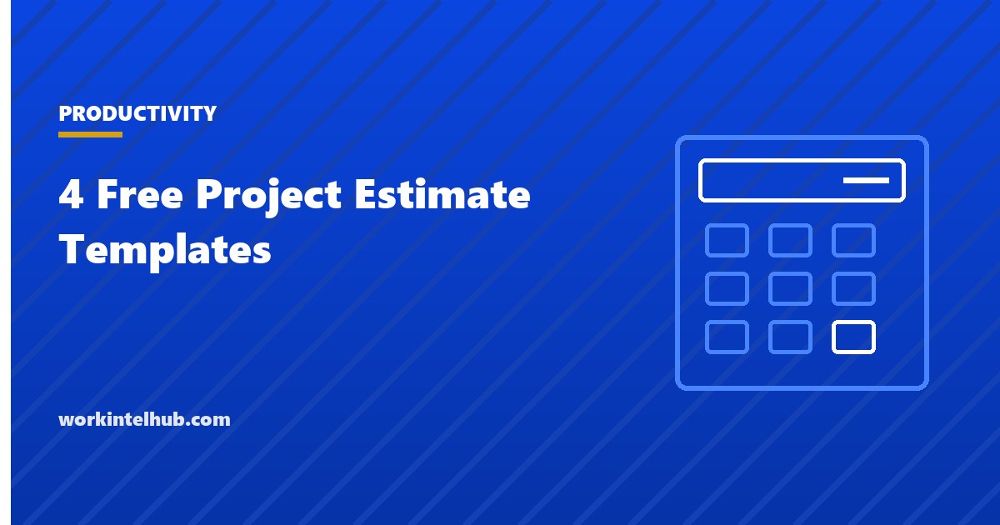

4 Free Project Estimate Templates

Estimates are wrong by nature; the question is how wrong and in which direction. Projects overrun because estimates were made top-down by someone who would not do the work, because contingency was removed to make the number acceptable, and because the single number hid a range that everyone knew existed. The templates here estimate the way the evidence suggests: bottom-up from work packages, with three values per package and a weighted expected value, with contingency sized to the uncertainty, and with the range shown to the client or sponsor rather than hidden.
Four templates: a bottom-up work estimate by package, a three-point estimate using the PERT weighting, a cost estimate that converts effort to money and adds expenses, contingency and margin, and a client quote that presents the result. The Excel workbook does the arithmetic; the Word and PDF versions carry the quote and the assumptions.
Download the templates
Free files: Word, Excel and PDF
Three files, free, no email required. Word to edit, Excel to track, PDF to print or share.
Templates open in Microsoft Word, Excel, Google Docs and Sheets, LibreOffice and any PDF reader. Free to use and adapt for your organisation.
The four templates
- Bottom-up work estimate. Effort per work package, estimated by the person who will do it, with the assumption behind each.
- Three-point estimate. Optimistic, most likely and pessimistic per package, weighted into an expected value with a standard deviation, and summed into a project estimate with confidence levels.
- Cost estimate. Hours by role at rates, plus expenses, contingency sized to the uncertainty and margin for external work.
- Client quote. Scope, deliverables, price with its basis, terms, assumptions, exclusions and the change process.
Estimating the way the evidence suggests
Bottom-up estimates by the people doing the work are more accurate than top-down estimates by managers, and three-point estimates are more honest than single numbers because they make the range explicit. The PERT weighting, (optimistic + 4 x most likely + pessimistic) / 6, gives an expected value that accounts for the long tail of things going wrong; the standard deviation, (pessimistic - optimistic) / 6, measures how uncertain each package is. Summed across the project, expected plus one standard deviation is an estimate that holds about 84 percent of the time, which is the number to commit to; the expected value alone holds about half the time.
Reference class forecasting, comparing the project with the actual outcomes of similar past projects, corrects the optimism that bottom-up estimates still carry; keep actuals from the plan's cost tracker so the next estimate can use them.
Contingency is not padding
Contingency is the money or time set aside for risks that are identified but may not happen, sized from the risk register and the three-point range: ten percent for repeat work with firm quotes, fifteen to twenty for typical projects, more for novel work. It is held as a separate line and drawn down through recorded decisions, not spread into the packages where it disappears. Removing contingency to make a number acceptable does not reduce the cost; it moves the overrun to the end where it is a surprise.
Margin is different: it is the supplier's profit on external work, applied after contingency, and the quote shows the total without exposing either.
Quoting without trapping yourself
- State the basis: fixed price for a defined scope, time and materials with an estimate, or a capped T&M.
- Show the range on estimated work; a client told "$40,000 to $52,000, most likely $45,000" trusts the number more than one told "$45,000".
- List assumptions and exclusions; every one is a future change request avoided.
- Name the change process and the rate for additions.
- Set a validity date; rates and availability change.
- Freelancers and consultants: the freelance and consultant templates track actuals against the quote.
Key takeaways
- Estimate bottom-up by the people doing the work, in three points per package, and commit to expected plus one standard deviation.
- Size contingency to the risk register and hold it as a separate line; removing it moves the overrun to the end.
- Quote with the basis, the range, assumptions, exclusions and a change process.
- Keep actuals so the next estimate can be corrected against them.
Frequently asked questions
What is a three-point estimate?
An estimate with an optimistic, most likely and pessimistic value for each work package, combined into an expected value using the PERT weighting (O + 4M + P) / 6 and a standard deviation (P - O) / 6. Summed across packages, it gives a project estimate with a measurable confidence level.
How much contingency should a project estimate include?
Typically 10 to 20 percent of the base estimate, sized to the risk register and the spread in the three-point estimates: lower for repeat work with firm quotes, higher for novel or poorly defined work. Hold it as a separate line.
What is the difference between an estimate and a quote?
An estimate is the internal calculation of effort and cost with its uncertainty. A quote is the price presented to a client, with the basis (fixed, time and materials or capped), terms, assumptions, exclusions and validity. The quote is derived from the estimate plus contingency and margin.
Why are project estimates usually too low?
Optimism bias, top-down estimates by people who will not do the work, single numbers that hide the range, contingency removed to make the number acceptable, and no comparison with the actual outcomes of similar past projects. The templates address each.
Should I show the client a range?
Yes, for estimated work. A range with a most likely value is more credible than a single number and sets the expectation that the final cost depends on scope. For fixed-price work, the range is internal and the contingency protects the margin.